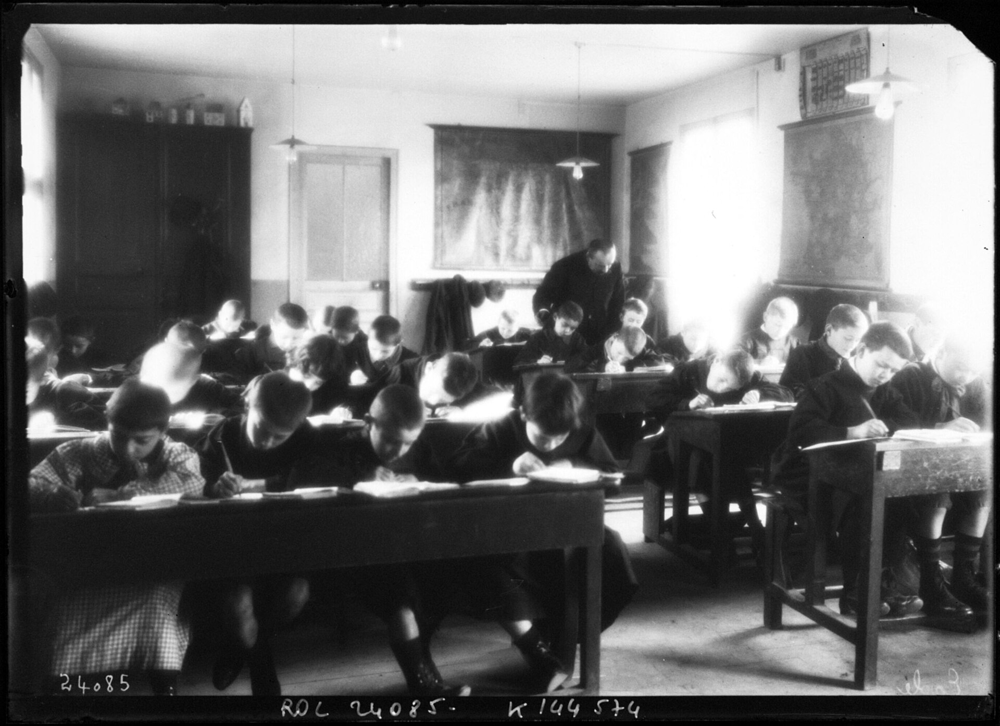
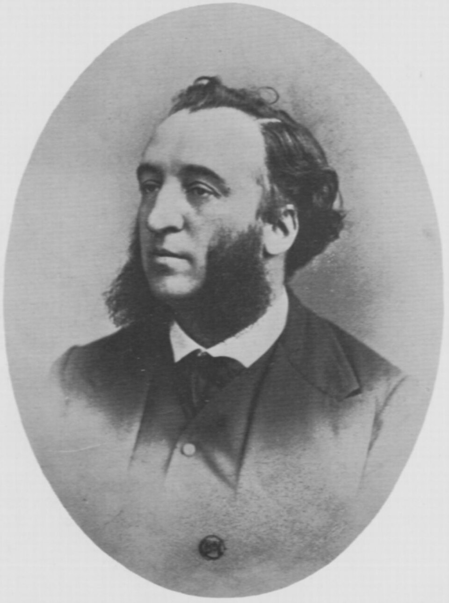
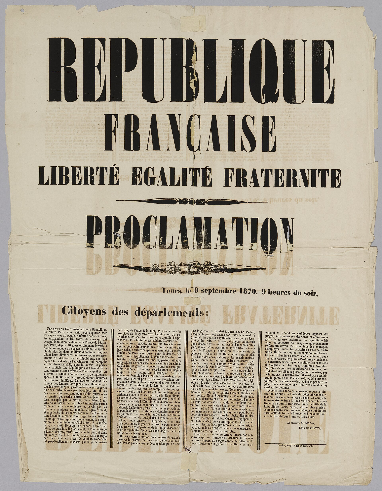

« L'instruction religieuse appartient aux familles et à l'église, l'instruction morale à l'école. »
« [La loi] a eu pour premier objet de séparer l'école de l'église, d'assurer la liberté de conscience et des maîtres et des élèves […]. »